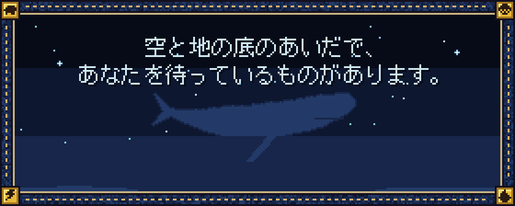
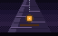

物語Story
ここにあるのは、これだけです。あとは、遊んで確かめてください。This is all there is here. The rest is for you to find in the game.
物語Story

空を、何かが通った。Something passed through the sky.山より大きな影が、雲の上を、音もなく。A shadow larger than a mountain, above the clouds, without a sound.
空と地の底のあいだで、Between the sky and the bottom of the earth,あなたを待っているものがあります。something is waiting for you.
設計書（
docs/design/）には物語の核心が書かれています。まっさらな気持ちで遊びたい人は開かないでください。このサイトにも核心は書いていません。The design documents (docs/design/) contain the heart of the story. If you want to play unspoiled, do not open them. This site contains no spoilers either.五章 深淵Chapter 5: The Abyss

四つを返した。それでも、まだ足りないのだという。Four were returned. Still, they say, it is not enough.底へ降りるほど、あなたより前の誰かの声が近くなる。The deeper you go, the closer a voice from someone who came before you.
都の地下に、閉じられた戸があります。その先は、地の底の深淵です。語り部は、そこへ降りた人のことを、多くは語りません。Beneath the capital is a sealed door. Beyond it lies the abyss, deep under the earth. The storyteller says little about those who went down.